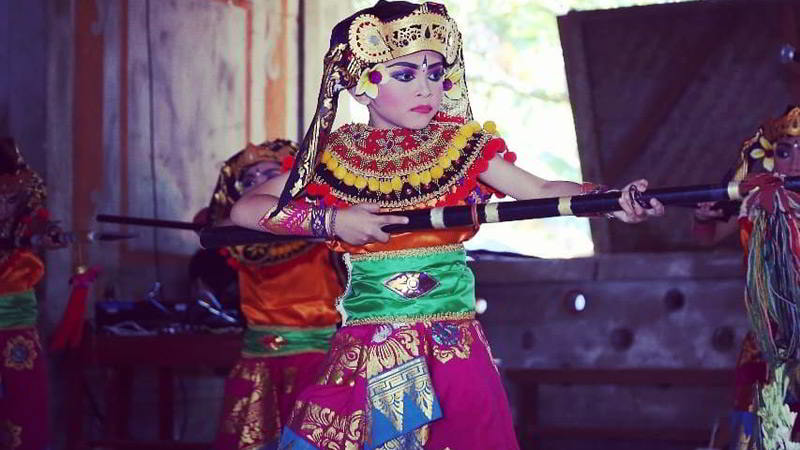

Tari Wirayuda
Tari Wirayuda. Tari merupakan produk kesenian Bali yang paling banyak macamnya. Tidak hanya tarian yang berfungsi ritual (Tari Wali), Bali juga kaya akan tarian yang sifatnya hiburan (Balih-balihan). Satu diantaranya adalah Tari Wirayudha yang tercipta pada tahun 1979 karya dari I Wayan Dibia.
Tarian Wirayuda merupakan tari berpasangan bertemakan kepahlawanan yang biasanya dibawakan oleh dua hingga empat penari. Mereka menari membawakan gerak mimitif (meniru gerak-gerik manusia) untuk menggambarkan sekelompok prajurit Bali Dwipa yang tengah bersiap-siap untuk maju ke medan perang.
Tari yang diproduksi di Sanggar Tari Bali Waturenggong ini dikembangkan dari beberapa jenis Tari Baris Gede (Tari Baris Upacara), khususnya Tari Baris Tumbak atau Tari Baris Katekok Jago. Oleh karena itu dalam menarikannya para penari Tari Wirayudha menggunakan properti tari berupa tombak.
<< Kembali